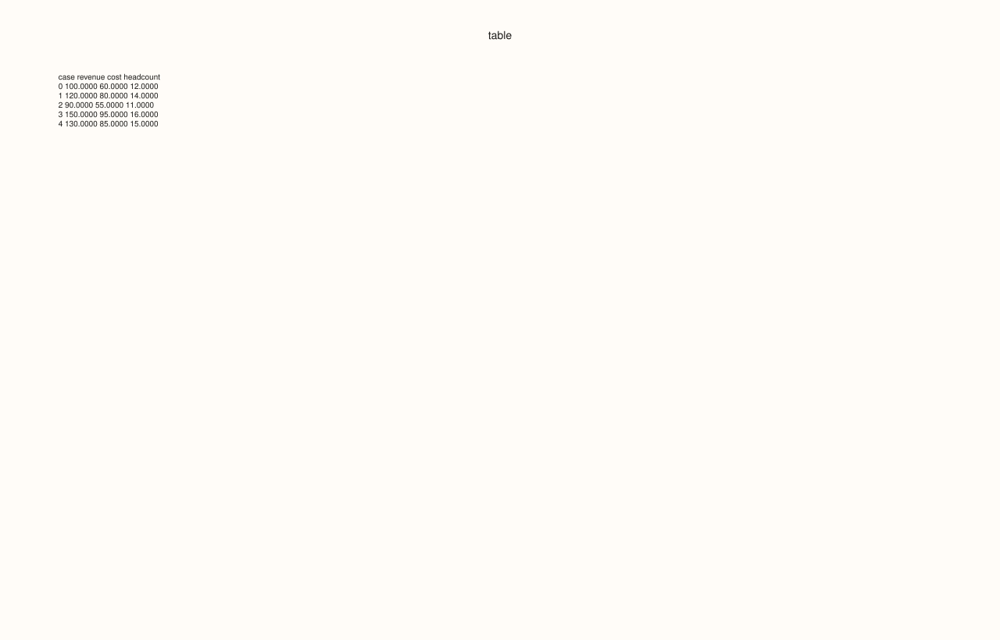
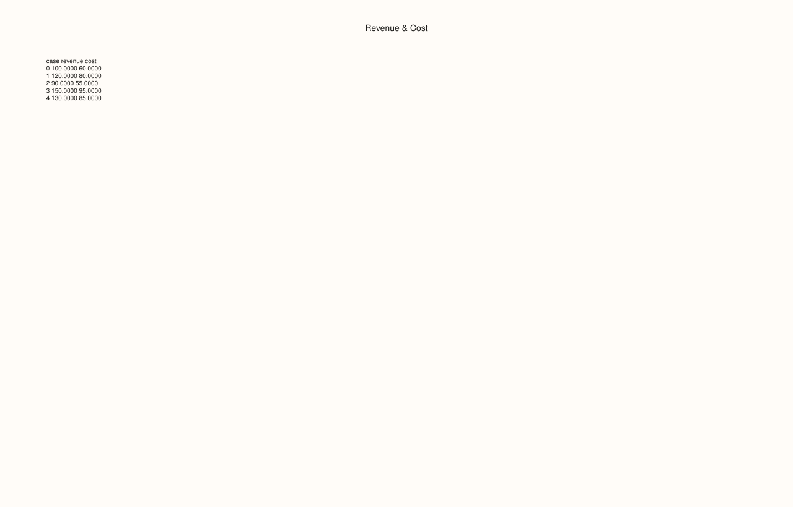
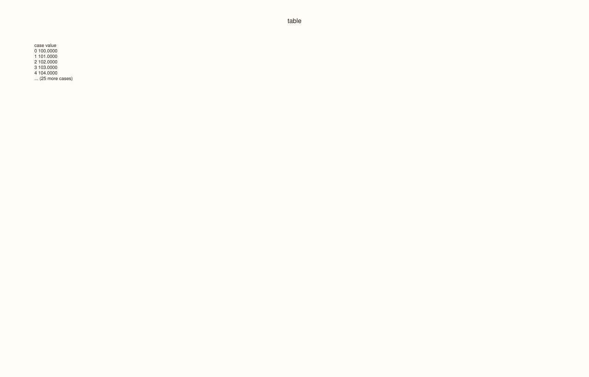
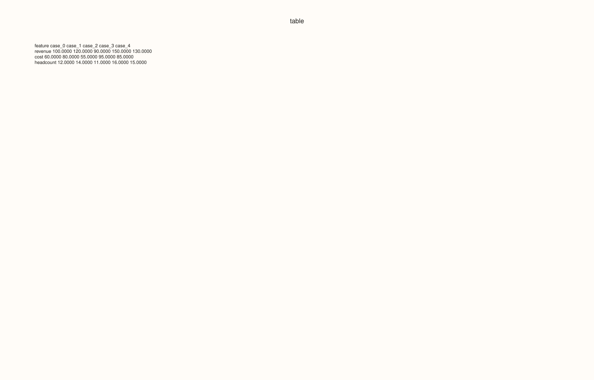
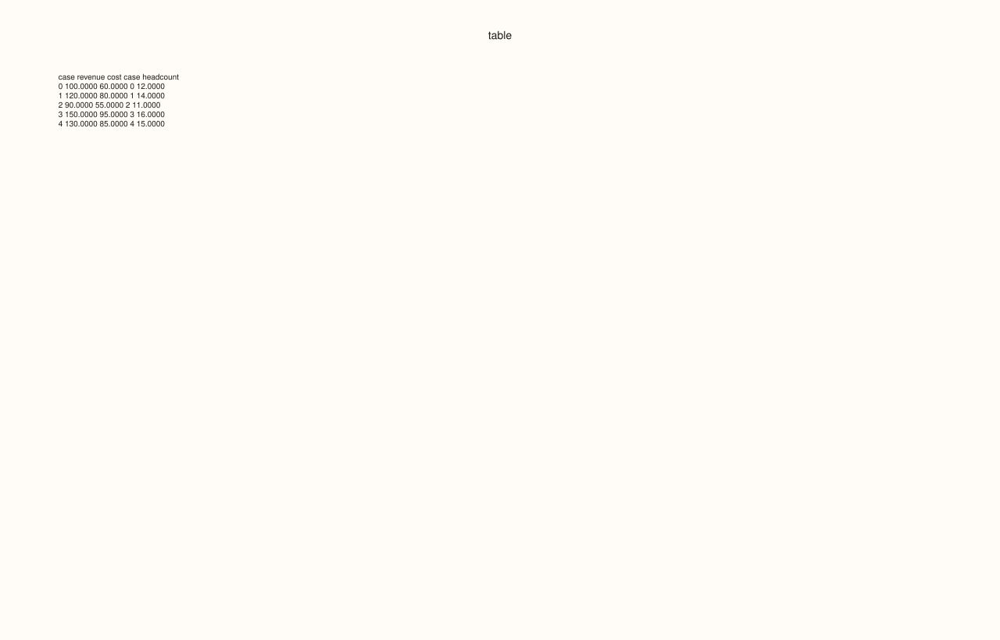
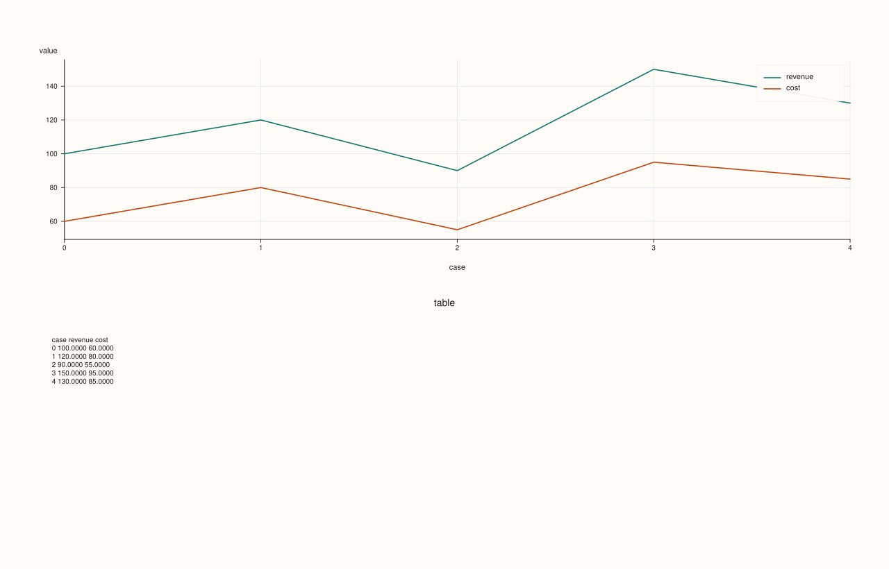

DataFramePlotAccessor::brief¶
Back to DataFramePlotAccessor API Reference
Signatures¶
DataFramePlotAccessor::brief(
pluss::msharp::RangeView::Of<std::string_view> features = {},
const BriefPlotOptions& options = {}) const -> pluss::pl::Studio
pluss::pl::Studio& DataFramePlotAccessor::brief(
pluss::pl::Studio& figure,
pluss::msharp::RangeView::Of<std::string_view> features = {},
const BriefPlotOptions& options = {}) const
What It Does¶
Renders a fixed-width, monospace-formatted text table of the requested numeric features’
raw values directly as a pane in a Studio — a “table as a figure” rather than any kind of
chart. Unlike every other method on this accessor, brief() doesn’t plot points, lines,
bars, or bins; it formats each selected feature’s values into aligned columns (with an
optional header, row/case index, and truncation past a configurable case limit) and draws
that text as the pane’s caption, with the grid, legend, axes, and tick labels all switched
off. This makes it useful for embedding a compact numeric summary alongside real charts —
for example, appended into the same Studio returned by another plot call.
Important
Two distinct overloads: fresh Studio vs. in-place composition
The first overload creates a brand-new Studio and returns it, the same as every other
method on this accessor. The second overload instead takes an existing Studio& by
reference, adds the table pane into it, and returns that same reference — genuinely
appending to a figure you already have, rather than starting a new one. This is the only
method on DataFramePlotAccessor that supports this in-place composition pattern; every
other method always constructs and returns a fresh Studio.
Shares the “empty features means every numeric feature” rule with box() — see
that page’s important callout for the exact rule and throw text.
Parameters¶
figure (pluss::pl::Studio&, in-place overload only)
An existing figure to append the table pane into. Must already exist (default-constructed
or returned from an earlier plot call); this overload never creates a new Studio.
features (RangeView<std::string_view>, default {})
Numeric features to summarize. Empty (the default) infers every numeric feature in the
frame — see box()’s important callout for the exact rule.
options (BriefPlotOptions)
cpp struct BriefPlotOptions { std::string title{"table"}; int precision{4}; bool include_header{true}; std::int64_t max_cases{10}; bool transpose{false}; bool include_case_index{true}; std::int64_t features_per_table{0}; std::int64_t tables_per_row{1}; std::int64_t table_gap_spaces{4}; };
title becomes the pane’s own title text. precision (floored to 0) sets fixed-point
decimal places for every cell; a non-finite value always renders as the literal text
"nan" regardless of precision. include_header toggles the column-name header row.
max_cases (falling back to 10 if ≤ 0) caps how many rows are printed before a
trailing "... (N more cases)" line is appended; it does not affect which features are
summarized, only how many rows. transpose = true swaps the orientation: features become
rows and cases become columns (labeled "case_0", "case_1", …) instead of the
default features-as-columns, cases-as-rows layout. include_case_index toggles a leading
"case" index column in the non-transposed layout (ignored when transpose = true, which
always uses its own "feature" label column instead). features_per_table (falling back
to “every feature in one table” if ≤ 0) splits the feature set into multiple smaller
tables of that width; tables_per_row (floored to 1) then lays those sub-tables out
side by side, table_gap_spaces (floored to 1) spaces between them.
Returns¶
For the first overload: pluss::pl::Studio, a fresh figure with one pane containing the
formatted table as its caption text (grid, legend, axis labels, and tick labels all
suppressed).
For the second overload: pluss::pl::Studio&, the same reference passed in, with the table
pane appended.
Examples¶
Example 1. Default options: every numeric feature, up to 10 cases, in a fresh Studio.
using namespace pluss::table;
auto metrics = DataFrame({
{"revenue", Thread(pluss::make_series({100.0, 120.0, 90.0, 150.0, 130.0}))},
{"cost", Thread(pluss::make_series({60.0, 80.0, 55.0, 95.0, 85.0}))},
{"headcount", Thread(pluss::make_series({12.0, 14.0, 11.0, 16.0, 15.0}))},
});
auto chart = metrics.plot().brief();
chart.show();
A single pane titled "table" (the default), with a header row (case, revenue, cost,
headcount) followed by 5 data rows (all 5 cases fit within the default max_cases = 10, so
no truncation line is appended).

Example 2. An explicit feature subset and a custom title.
BriefPlotOptions options;
options.title = "Revenue & Cost";
auto chart = metrics.plot().brief({"revenue", "cost"}, options);
chart.show();

Example 3. max_cases truncation on a larger frame.
std::vector<double> many_values;
for (int i = 0; i < 30; ++i) {
many_values.push_back(100.0 + i);
}
auto big = DataFrame({
{"value", Thread(pluss::make_series(many_values))},
});
BriefPlotOptions capped;
capped.max_cases = 5;
auto chart = big.plot().brief({}, capped);
chart.save_pdf("big_brief.pdf");
Only the first 5 of 30 rows are printed, followed by a trailing "... (25 more cases)" line.

Example 4. transpose = true: features become rows, cases become columns.
BriefPlotOptions transposed;
transposed.transpose = true;
auto chart = metrics.plot().brief({}, transposed);
The header row now reads feature, case_0, case_1, …, and each subsequent row is one
feature’s values across all shown cases — useful when there are many features but few cases,
the opposite orientation of the default layout.

Example 5. features_per_table and tables_per_row: splitting a wide feature set into
side-by-side sub-tables.
BriefPlotOptions split;
split.features_per_table = 2;
split.tables_per_row = 2;
auto chart = metrics.plot().brief({}, split);
chart.show();
With 3 features and features_per_table = 2, the feature set splits into two sub-tables
(revenue/cost, then headcount alone); tables_per_row = 2 places both side by side in
the same row of text, separated by table_gap_spaces (4, the default) spaces.

Example 6. The in-place overload: appending a brief() table into a Studio that already
has a real chart, rather than creating a separate figure.
auto chart = metrics.plot().line({"revenue", "cost"});
metrics.plot().brief(chart, {"revenue", "cost"});
chart.show();
chart starts as the line plot’s figure (one pane); the second call appends a second pane
containing the brief() table directly into the same Studio, and returns a reference to
that same chart object (which this example discards, since chart itself was already
modified in place).

Example 7. A non-numeric feature name throws, same as box().
auto tagged = DataFrame({
{"revenue", Thread(pluss::make_series({100.0, 120.0, 90.0}))},
{"region", Thread(pluss::make_note({"East", "West", "East"}))},
});
try {
auto bad = tagged.plot().brief({"revenue", "region"});
} catch (const std::exception& e) {
std::cout << e.what();
}
Output¶
DataFrame::plot().brief: feature 'region' is not a numeric Series
Notes¶
Empty (default)
featuresinfers every numeric feature — seebox()’s important callout for the exact rule.The two-argument-plus-figure overload composes in place into an existing
Studio&; every other method on this accessor (includingbrief()’s own other overload) always creates a fresh one — see the important callout above.max_casestruncates displayed rows, not the underlying feature selection.Non-finite cell values always render as the literal text
"nan", independent ofprecision.The rendered pane has no grid, legend, or axis labels — it exists purely to display text.
Returns a
pluss::pl::Studio(orStudio&for the in-place overload) — seeline()’s important callout for how to view or save the result.
See Also¶
DataFramePlotAccessor::box: the canonical explanation of the “empty features means every numeric feature” rule shared here.DataFramePlotAccessor::auto_plot: picks a real chart type automatically, in contrast tobrief()’s fixed textual summary.